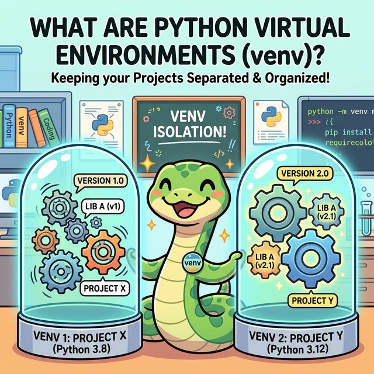
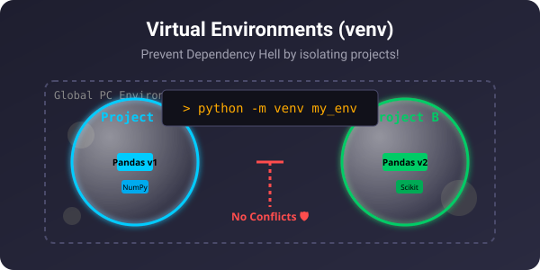

10주차: 모듈과 패키지 - 대규모 프로젝트 개발의 기초 📦
다양한 파이썬 코드를 기능별로 쪼개어 보관하는 모듈(Module)과 이들의 묶음인 패키지(Package), 그리고 충돌 없는 가상환경 개발 장부인 가상환경(venv)의 모든 작동 원리를 배웁니다.
학습목표
내가 짠 파이썬 코드 길이가 수백 줄을 넘어가면, 마치 수학의 인수분해처럼 코드를 의미 있는 단위(파일)로 쪼개어 다른 파일에서 수입(import)해 쓰는 아키텍처적 사고가 필요합니다. 본 장에서는 나만의 커스텀 모듈을 만들 때 필수적인 흑마법 방어막 if __name__ == "__main__": 의 정체를 파악합니다. 나아가 데이터 분석 여정에서 피할 수 없는 ‘의존성 지옥(Dependency Hell)’을 막아주는 안전한 방공호, 가상환경(venv)과 패키지 관리장부(requirements.txt) 세팅법을 확립합니다.


💡 TL;DR (1분 핵심 요약)
- 커스텀 모듈: 내가 짜놓은
my_math.py파일은 언제든 다른 파일에서import my_math로 불러와 쓸 수 있는 훌륭한 부품이 됩니다. __name__ == "__main__": 내가 직접 이 파일을 실행했을 때만 동작하고, 남이 나를import해서 부품으로 쓸 때는 함부로 켜지지 않게 막아주는 방어막 씰(Seal)입니다.venv(가상환경): A 프로젝트는 Pandas 1.0이, B 프로젝트는 Pandas 2.0이 필요할 때 파이썬끼리 싸우지 않도록 폴더마다 독립된 원룸을 배정해주는 기술입니다.
1. 나만의 모듈(Module) 만들기 기초
파이썬에서는 거창한 선언 없이, 그저 .py 확장자로 저장한 모든 파일이 모듈(Module)이 됩니다.
[상황] 같은 폴더에 두 개의 파이썬 파일이 존재합니다.
my_tools.py(도구를 모아놓은 창고 파일)main.py(실제 도구를 가져다 쓰는 사령부 파일)
my_tools.py 작성
# my_tools.py
def add(a, b):
return a + b
def multiply(a, b):
return a * b
print("my_tools 공장이 가동되었습니다!")
main.py 에서 불러다 쓰기
# main.py
import my_tools
# 남의 파일(모듈)에 있는 함수 사용하기!
result = my_tools.add(10, 20)
print(f"결과: {result}")
🚨 문제 발생!
main.py를 실행하면 콘솔에 다음과 같이 뜹니다.my_tools 공장이 가동되었습니다! 결과: 30나는 단순히 함수 부품만 가져오고 싶었는데(
import), 파이썬은 모듈을 import 하는 순간 그 파일 전체를 한 번 스윽 읽어버립니다. 그래서 원치 않던
2. 방어막 전개: if __name__ == "__main__":
위와 같은 “부작용 터짐 현상”을 막기 위해 파이썬 창시자들이 만들어 둔 룰이 있습니다. 바로 “이 코드가 직접 실행된 진짜 주인공(Main) 일 때만 작동하라!”라는 마법의 주문입니다.
my_tools.py 수정본 (방어막 적용)
# my_tools.py
def add(a, b):
return a + b
# ---- 흑마법 방어막 경계선 ----
if __name__ == "__main__":
# 이 아래의 코드들은 'my_tools.py'를 [직접 실행] 했을 때만 작동합니다.
# 남이 import 해서 쓸 때는 코딱지도 건드려지지 않고 철저히 무시됩니다!
print("my_tools 공장이 [직접 실행]으로 가동되었습니다!")
print(add(5, 5))
이제 다시 main.py를 실행해 보면, 쓸데없는 프린트 문장이 뜨지 않고 깔끔하게 덧셈 결과만 출력됩니다!
☕ Java vs 🐍 Python 스나이퍼 대결
진입점(Entry Point) 비교
- Java: 프로그램이 무조건 시작되는 지점은
public static void main(String[] args)라는 거대한 선언문이 독점합니다. - Python: 파일 실행 시 묻지도 따지지도 않고 최상단부터 순차 실행됩니다. 단축키 격인 보이지 않는
__name__변수에 파이썬이 몰래"__main__"이라는 명찰을 달아줍니다. 남에게 부품으로 불려왔을 때는 명찰이"__main__"이 아니기 때문에 방어벽(if)을 뚫을 수 없습니다.
3. 의존성 지옥과 가상환경(Virtual Environment)
실무 개발에서는 여러 외주 프로젝트를 동시에 뜁니다.
- A 회사 프로젝트: 원시적인
Pandas v0.25구버전이 필요함 - B 회사 프로젝트: 최신
Pandas v2.2신버전이 필요함
이때 내 컴퓨터 파이썬 폴더에 pip install pandas를 함부로 때리면, 이전 버전을 갈아엎고 신버전만 깔리면서 A 회사 프로젝트에 접속하는 순간 에러를 뿜으며 대폭발(Dependency Hell)합니다.
이를 막기 위해 파이썬은 해당 소스코드 폴더 안에 나만의 원룸(가상환경)을 파주는 venv 모듈을 기본 제공합니다.
🛠️ 필수 가상환경 세팅 3단계 명령 (터미널)
- 내 방(원룸) 계약하기 (생성)
python -m venv my_env # 작업 폴더 안에 'my_env' 라는 작은 파이썬 복사본 폴더가 통째로 지어집니다. - 내 방 불 켜기 (활성화 - Windows VS Code 기준)
my_env\Scripts\activate # 터미널 프롬프트 앞에 (my_env) 라는 녹색 마크가 뜨면 성공! 이제부터 까는 패키지는 내 컴퓨터(Global)가 아니라 이 원룸에만 격리되어 깔립니다. - 원룸에 가구(패키지) 들여놓기
(my_env) pip install pandas matplotlib
📄 영수증 발급: requirements.txt
이 프로젝트를 남(팀원 구글 드라이브나 GitHub)에게 넘길 때, 쓸데없이 수백 메가바이트짜리 가상환경 폴더(my_env)를 통째로 압축해 보내면 욕을 먹습니다.
대신, “이 프로젝트를 돌리려면 이 가구(버전) 목록이 필요합니다”라는 영수증 파일만 뽑아서 소스코드와 함께 한 장 떨궈주면 됩니다.
- 영수증 발급 (내가 치는 명령어)
pip freeze > requirements.txt - 영수증대로 가구 자동 세팅 (팀원이 치는 명령어)
pip install -r requirements.txt
🎧 Vibe Coding
🗣️ 학생 프롬프트 (AI에게 이렇게 명령해 보세요): “파이썬
venv가상환경을 잡았는데 터미널에서 빨간색으로PSSC 실행 정책 요류 (허가되지 않은 스크립트 실행 불가)같은 보안 에러 뜨면서activate가 안 먹혀. 이거 윈도우 파워쉘 보안 문제 같은데 어떻게 우회해서 켤 수 있는지 알려줘.” (💡 VS Code 초기 세팅 시 가장 많이 부딪히는 실전 버그 투표 1위입니다!)
코딩 영단어 학습 📝
- Dependency Hell (디펜던시 헬): 의존성 지옥. (내 코드가 A모듈에 의존하고, A모듈은 B모듈 버전1에 의존하는데, 내가 새로 깐 C모듈이 B모듈 버전2를 깔아 덮어버리면서 전체 프로그램이 연쇄 붕괴하는 악몽 같은 상황입니다. 가상환경이 피난처입니다.)
- Virtual Environment (버추얼 엔바이런먼트 / venv): 가상 환경. (현실의 내 컴퓨터(자원)를 더럽히지 않고 샌드박스처럼 격리된 파이썬 실행 환경. 폴더 단위로 1채씩 지어집니다.)
- Freeze (프리즈): 얼리다, 고정하다. (
pip freeze는 지금 당장 내 원룸에 깔려있는 패키지와 그 정확한 버전 번호(예:pandas==2.0.3)를 스냅샷 사진 찍듯 딱 얼려서 출력해주는 명령어입니다.)
✍️ 이번 주 연습 문제
문제 1. .venv 가상환경을 구축하고 이를 터미널에서 활성화하는 명령어를 macOS와 Windows 각각에 맞추어 정리해 보세요.
문제 2. calc.py라는 모듈을 만들고 덧셈/뺄셈 함수를 작성한 뒤, 이 모듈이 직접 실행될 때만 실행되는 테스트 코드를 if __name__ == "__main__": 문을 활용해 구현해 보세요.
문제 3. (심화) sys.path의 정체가 무엇이며, 파이썬이 임포트할 모듈을 검색할 때 이 리스트가 어떤 역할을 하는지 3단계 검색 메커니즘을 들어 설명해 보세요.
📖 교재 상세 학습: 24 내장 모듈 가져다 쓰기 (import)
24 남이 만든 훌륭한 도구 빌려오기: 모듈과 import
진정한 개발자라면 모든 기능을 바닥부터 스스로 짜는 수고를 덜어야 합니다. 파이썬 생태계에는 이미 수학 연산, 무작위 뽑기 기능, 웹 통신 기능 등을 담아둔 수많은 마법의 상자가 완벽하게 준비되어 있습니다. 우리는 이런 완성된 도구 상자들을 가리켜 모듈(Module)이라고 부릅니다.
내 파이썬 스크립트 안으로 이런 외부 도구를 영입해 오는 필수 명령어가 바로 import입니다.
1. math 모듈: 정교한 수학 공학용 계산기
원주율(파이, $\pi$)을 소수점 끝까지 직접 외워서 3.1415… 라며 타이핑할 필요가 전혀 없습니다. 파이썬의 핵심 수학 관련 모듈인 math를 불러서 맡기면 됩니다.
REPL 실습: math 모듈 써보기
>>> import math
>>> r = 10
>>> circle_area = math.pi * r * r # pi 상수를 이용한 원의 넓이
>>> print(circle_area)
314.1592653589793
모듈이 품고 있는 특정 기능이나 변수를 호출하려면 항상 모듈명.기능명 형식처럼 중간에 마침표(.)로 다리를 놔주어야 합니다.
math 모듈 안에는 억지로 소수점을 끌어올리는 올림 함수 math.ceil()과, 냉정하게 깎아내리는 내림 함수 math.floor() 등 유용한 도구들이 가득합니다.
⚠️ 팁: 일반적으로 실생활에서 자주 쓰이는 ‘반올림’ 연산은 굳이
math모듈을 임포트하지 않아도 되는 파이썬의 영구 내장 함수round()가 기본 담당하고 있습니다.
2. random 모듈: 예측 불가능한 주사위 굴리기
RPG 게임에서 드랍되는 몬스터의 아이템이나 오늘 점심 메뉴를 무작위로 고르려면 random 모듈이 필수적입니다.
그중에서도 리스트 내부에 늘어선 여러 후보 중 하나를 임의로 콕 집어주는 choice 함수는 매우 활용도가 높습니다.
코드: random_picker.py
import random
lucky_numbers = [7, 12, 23, 31, 40, 45]
my_pick = random.choice(lucky_numbers)
print(f"시스템이 추천하는 오늘의 번호는: {my_pick}")
3. 통신 모듈로 인터넷 훔쳐보기 (맛보기)
파이썬 기본 내장 모듈들의 기능은 무궁무진합니다. 심지어 인터넷 사이트의 코드(HTML)를 단 몇 줄의 코딩으로 쭉 빨아들이는 것도 가능합니다. (아래 코드는 “이렇게도 쓸 수 있구나” 정도로 감상만 하고 넘어가시면 됩니다.)
코드: 웹 페이지 데이터 추출 맛보기
import urllib.request
target_url = "http://example.com/"
response_data = urllib.request.urlopen(target_url)
print(response_data.read().decode('utf-8'))
이렇듯 단 한 줄의 import 구문은 내 코드를 전 세계 파이썬 고수들이 쌓아올린 거대한 지식의 탑과 연결해 줍니다.
💻 미니 실습: 외부 모듈 활용하기
Quiz 1 math 모듈을 제일 먼저 불러온 뒤, 50.7이라는 실수의 소수점을 무자비하게 날려버리는(내림 연산) 함수를 찾아내 터미널에 결과를 띄워보세요.
모범 답안 보기
**풀이 1** ```python import math print(math.floor(50.7)) # 결과: 50 ```📖 교재 상세 학습: 25 나만의 모듈 직접 만들기
25 나만의 전용 특수 모듈 개발하기
파이썬 개발자들이 만들어 둔 모듈만 받아 쓰려니 조금 아쉽지 않나요? 내가 심혈을 기울여 만든 유용한 함수나 중요한 데이터들을 잘 모아서 묶어둔 평범한 파이썬 스크립트 파일(.py) 하나하나가 모두 훌륭한 독자적 모듈로 대우받습니다! 관련 있는 여러 모듈 폴더를 모아놓은 거대한 묶음은 패키지(Package)라고 부릅니다.
나만의 도구상자 파일을 직접 창조해 봅시다.
1단계: 도구 상자(모듈 파일) 기획 및 제작
내가 코딩을 하는 작업 폴더 아래에 my_toolkit.py 라는 새로운 파이썬 파일을 생성하고, 여기저기서 편하게 꺼내 쓸 만한 상숫값이나 함수들을 선언해 줍니다.
제작할 코드: my_toolkit.py
# 향후 여러 스크립트에서 공용으로 돌려 쓸 나만의 도구 창고입니다.
MAX_WIND = 15
SERVER_LIMIT = 100
def greet_user(nickname):
return f"환영합니다, {nickname} 님! 서버에 접속하셨습니다."
def throw_dice():
import random
return random.choice([1, 2, 3, 4, 5, 6])
2단계: 메인 파일에서 도구상자 불러 쓰기
이제 방금 만든 공간 파일과 동일한 디렉토리에 메인 로직을 담당할 game_start.py 파이썬 파일을 추가합니다. 그리고 맨 윗줄에서 아까 지어준 파일 이름을 import로 소환하기만 하면 끝입니다.
활용할 코드: game_start.py
import my_toolkit # 중요: 뒤에 .py 확장자는 절대로 붙여선 안 됩니다!
# 만든 모듈 파일에서 글로벌 변수 꺼내기
print(f"현재 채팅방 최대 수용 인원은 {my_toolkit.SERVER_LIMIT}명 입니다.")
# 만든 모듈 파일에서 함수(기능) 빌려 쓰기
welcome_msg = my_toolkit.greet_user("파이썬초보")
print(welcome_msg)
dice_val = my_toolkit.throw_dice()
print(f"내가 굴린 주사위 눈금: {dice_val}")
이 game_start.py를 실행하면, 아까 다른 파일에서 설계했던 기능들이 한 치의 오차 없이 완벽하게 구동되는 것을 목격할 수 있습니다. 이 기법을 도입하면 수천 줄짜리 코드를 기능별로 쪼개어 파일로 관리하는 ‘코드의 분업화’가 비로소 완성됩니다.
💡 파이썬 모듈의 숨겨진 원리: __main__과 공간 분리
__name__ == "__main__"테스트 블록 파이썬은 어떤 스크립트 파일이 에디터 등에서 직접 실행되었을 때만 그 파일의 내장 변수인__name__에"__main__"이라는 특별한 문자표를 부여해 줍니다. 반대로import를 통해 남의 파일로 불려 들어갔을 때는 진짜 자기 파일 이름표를 가집니다. 이를 응용해 모듈 제작 시 아래와 같은 테스트 뼈대를 맨 밑에 자주 숨겨둡니다.
# my_toolkit.py 맨 밑에 추가됨
if __name__ == "__main__":
# 이 부분은 내가 이 파일을 '단독으로' 실행해 볼 때만 테스트용으로 작동합니다.
# game_start.py에서 나를 import 할 때는 이 코드가 몰래 무시되고 넘어갑니다.
print(throw_dice())
-
네임스페이스(Namespace)에 의한 독립성 모듈 파일에서 선언한 변수나 함수들은 모두 해당 모듈만의 철저히 독립적인 네임스페이스(이름 공간)에 안전하게 갇히게 됩니다. 그래서 여러분이 A 모듈과 B 모듈에 모두
MAX_WIND = 10이라고 똑같은 변수 이름을 만들더라도, 절대로 서로 충돌하거나 망가지지 않고 완벽한 독립 상태가 유지됩니다. -
패키지 조립을 위한 특별한 예약어 (
__init__.py) 나중에 여러 모듈을 하나의 거대한my_game폴더(패키지) 안에 체계적으로 분류하고 싶다면, 파이썬에게 “여기는 평범한 폴더가 아니라 관련 코드를 묶어놓은 패키지 폴더입니다!”라고 알려주어야 합니다. 이를 위해 폴더 안에 내용이 텅 빈__init__.py라는 마법의 파일을 하나 쓱 만들어 두는 것이 개발자들의 모범 사례입니다. (파이썬 3.3부터는 없어도 되지만 명확한 구조 구분을 위해 생성해 두는 것을 강력히 추천합니다.)
🚨 모듈 기획 시 지켜야 할 철칙
.py이름표는 떼고 부를 것 다른 스크립트에서 모듈을 부를 때import my_toolkit.py라고 부르면 파이썬은 모듈을 인식하지 못하고 문법 에러를 토합니다. 오직 파일의 순수 ‘이름’ 부분만 호명해야 합니다.- 같은 보금자리에 둘 것
현재 초급 단계에서는, 부품 역할을 하는 도구 상자 파일(
my_toolkit.py)과 전체를 관장하는 메인 파일(game_start.py)이 기필코 같은 폴더 안에 이웃하고 있어야 파이썬 엔진이 손쉽게 파일을 주워 담을 수 있습니다. - 유명한 거인들의 이름을 사칭하지 말 것
파이썬이 태생적으로 품고 있는 공식 모듈들과 똑같은 파일명을 내 모듈에 붙이면 절대 안 됩니다. 예를 들어 내 파일 이름을 실수로
math.py나sys.py로 짓고 실행하면, 파이썬이 원래의 진짜 모듈 대신 내 빈 깡통 파일을 우선으로 잘못 불러오게 되어 시스템이 망가지는 치명적 장애가 생길 수 있습니다! 항상 겹치지 않는 독창적인 파일명(예:math_custom.py)을 선호하세요.
📖 교재 상세 학습: 59 시간의 흐름을 지배하는 모듈: datetime
59 특정 시점(Point in Time)의 좌표를 포착하다: datetime 모듈
</div>
현실의 현재 시각 스캔하기
우리가 스마트폰 액정을 켜서 시계를 힐끗 보듯, 파이썬 스크립트 도중에도 datetime 시스템을 호출해 현재 흐르고 있는 우주의 정확한 시각을 포착해 낼 수 있습니다.
REPL 실습 창: 시간아 멈춰라!
>>> import datetime # 시간 관리 전담 부서를 호출합니다.
>>> current_time = datetime.datetime.now()
>>> current_time
datetime.datetime(2023, 10, 24, 15, 30, 0, 123456)
출력된 좌표는 왼쪽부터 차례대로 연도, 월, 일, 시각, 분, 초, 미세한 마이크로초 단위까지 정밀하게 쪼개져 있습니다.
내 맘대로 과거나 미래 특정 좌표 세팅하기
마치 타임머신 계기판에 가고 싶은 연도를 입력하거나 폰 알람을 내일 아침으로 직접 맞추는 것처럼, 프로그래머가 인위적으로 날짜와 시간을 강제로 부여해 인스턴스(시간 캡슐)를 찍어낼 수도 있습니다.
REPL 실습 창: 타임머신 좌표 설정
>>> target_date = datetime.datetime(2024, 1, 1) # 내년 1월 1일 자정으로 세팅!
>>> target_date
datetime.datetime(2024, 1, 1, 0, 0)
시점 사이의 간격 측정하기 (남은 D-Day 계산)
우리가 설정한 새해 첫날(target_date)이 현재 시점(current_time)으로부터 도대체 얼마나 남았는지 산술적으로 빼기를 하면 그 거리를 적나라하게 측정할 수 있습니다.
REPL 실습 창: 디데이 폭파 시간 계산기
>>> gap = target_date - current_time
>>> gap
datetime.timedelta(days=68, seconds=30600, microseconds=876544)
>>> print(f"새해까지 정확히 {gap.days}일 남았네요!")
새해까지 정확히 68일 남았네요!
이 연산을 거쳐 탄생한 녀석은 더 이상 콕 집은 ‘시점(datetime)’이 아닙니다. 두 점액통 사이를 연결하는 “순수한 기간과 길이”만을 의미하는, 시계열의 또 다른 황태자 timedelta 타입으로 변모합니다.
💻 미니 실습: 나만의 D-Day 자동 계산기
Quiz 1 여러분이 간절히 기다리는 특정 기념일(예: 2024년 10월 31일 할로윈)을 event_day 변수에 좌표로 찍어두고, 평범한 오늘 시점 기준으로 대체 며칠이나 참아야 하는지 숫자만 쿨하게 출력해 내는 스크립트를 짜보세요.
모범 답안 보기
**풀이 1** ```python import datetime # 올해 할로윈 파티를 디데이 타겟으로 세팅! event_day = datetime.datetime(2024, 10, 31) today_now = datetime.datetime.now() # 두 시간 좌표를 빼서 순수 '간격(길이)'을 뽑아낸 뒤, '.days' 속성으로 날짜 수만 쏙 빼냅니다. remaining_days = (event_day - today_now).days print(f"광란의 할로윈 파티까지 고작 {remaining_days}일 남았습니다.") ```앞서 배운 datetime.datetime 모듈이 거대한 우주 달력에 압정을 콱 박아 표시한 콕 집은 특정 시점(좌표)이라면, 이번에 다룰 datetime.timedelta는 하루, 열흘, 혹은 365일 같이 쭉 뻗은 길이나 양(Duration) 그 자체를 의미합니다.
과거나 현재의 특정 ‘시점’ 좌푯값에 이 ‘길이’ 덩어리를 더하면, 미래에 도달할 새로운 좌푯값을 너끈히 알아낼 수 있습니다!
사귄 지 100일째 되는 기념일 파워 로직 계산
방금 막 1일 차가 된 풋풋한 커플이 100일 파티를 예약할 날짜는 정확히 언제 며칠일까요?
REPL 실습 창: 기념일 계산기
>>> import datetime
>>> current_date = datetime.datetime.now()
# '100일'이라는 압도적인 덩어리(길이)를 창조해 냅니다.
>>> hundred_span = datetime.timedelta(days=100)
# 현재 달력 시점(좌표) + 100일(길이) = 다가올 미래의 도착일(좌표)
>>> party_day = current_date + hundred_span
>>> print(f"두근두근 100일 기념일은 {party_day.year}년 {party_day.month}월 {party_day.day}일입니다!")
두근두근 100일 기념일은 2024년 2월 1일입니다! (실행하는 시능에 따라 결괏값은 요동칩니다)
아침 9시 정각으로 고집스럽게 고정하기 (replace)
특정 디데이 계산기나 업무용 타이머의 기준이 늘 ‘오전 9시 정각 출근 시간’이라면, 날짜를 뭉텅이로 더하기 전에 엉망인 현재 시, 분, 초 단위들을 오전 9시로 강제 덮어쓰기(replace) 해두면 계산이 아주 깔끔하게 떨어집니다.
REPL 실습 창: 시간 리셋의 연금술
# 지금 우주 시계가 오후든 새벽이든 무시하고, '시, 분, 초'를 무자비하게 09:00:00 으로 억지로 밀어버립니다.
>>> today_work_start = datetime.datetime.now().replace(hour=9, minute=0, second=0)
# 이 깨끗하게 리셋된 상태에서 1일이라는 '길이'를 살포시 더해주면, 한 치의 오차도 없이 완벽한 낼 아침 9시 좌표가 툭 튀어나옵니다.
>>> tomorrow_work_start = today_work_start + datetime.timedelta(days=1)
달력을 보며 손가락으로 짚어가던 복잡한 아날로그 방식은 버리세요. 이제 여러분은 datetime 클래스와 timedelta 클래스의 이중 플레이를 통해 완벽한 시간의 지배자로 거듭났습니다.
💻 미니 실습: 업무 마감일 수명 연장 프로젝트
Quiz 1 여러분의 과한 업무를 위해 오늘 자정 직전인 밤 11시 59분 59초에 맞춰진 death_line 변수를 하나 생성하세요. 그런 다음, 이 피 말리는 death_line에 은혜롭게도 정확히 단 7일의 시간을 극적으로 연장해 준 new_death_line 변수를 탄생시키고 그 은총 가득한 날짜를 출력해 보세요.
모범 답안 보기
**풀이 1** ```python import datetime # 1. 오늘 날짜를 기준으로 시간 파츠만 23시 59분 59초로 가혹하게 튜닝합니다. death_line = datetime.datetime.now().replace(hour=23, minute=59, second=59) # 2. 7일 치만큼의 생명줄(길이 단위)을 덧붙여줍니다! new_death_line = death_line + datetime.timedelta(days=7) print(f"극적으로 연장된 새로운 데드라인은 {new_death_line} 입니다. 살았다!") ```📖 교재 상세 학습: 4. 모듈(Module)과 패키지(Package)
4. 모듈(Module)과 패키지(Package)
프로그램의 덩치가 커지면 모든 코드를 하나의 파일에 담아둘 수 없습니다. 파이썬에서는 관련 있는 함수와 클래스들을 하나의 파이썬 파일(.py)로 묶어 모듈(Module) 단위로 관리하며, 여러 모듈들을 다시 하나의 폴더로 묶은 것을 패키지(Package)라고 부릅니다.
4.1 import 구문의 활용
외부에 작성된 파이썬 모듈을 현재 내 코드에서 불러와 사용하려면 import 문을 사용합니다. 파이썬이 기본으로 제공하는 내장 모듈들(예: math, os) 뿐만 아니라 개발자가 직접 만든 파일들도 동일한 방식으로 호출할 수 있습니다.
다양한 import 방식
- 모듈 전체 불러오기
import math print(math.pi) # 3.141592... - 별칭(alias) 지정하기
import pandas as pd - 특정 요소만 골라서 불러오기
모듈 이름 대신 내부의 객체 이름만으로 직접 접근하고 싶을 때 사용합니다.from math import sin, pi print(sin(pi / 2)) # 1.0
[!TIP]
import문은 원칙적으로 파이썬 스크립트 파일의 맨 최상단에 모아서 작성하는 것(PEP 8 권장)이 모범 사례입니다. 가독성을 높이고 의존성을 한눈에 파악할 수 있기 때문입니다.
4.2 메인 모듈의 시작점 ( __main__ )
자바(Java)나 C언어에는 프로그램의 진입점을 알리는 고정된 main() 함수가 존재하지만, 파이썬은 파일이 곧바로 실행되는 스크립트 특성을 가집니다.
파이썬 인터프리터는 현재 직접 실행된 최초의 파이썬 파일 객체에 한해서만 __name__ 이라는 특수 변수에 "__main__" 이라는 문자열표시를 부여해 줍니다. 반면 import 로 불려온 파일의 __name__ 에는 본래 파일명(모듈명)이 들어갑니다.
# calculator.py
def add(a, b):
return a + b
# 이 파일이 외부에서 import된 것이 아니라 직접 실행(python calculator.py)될 때만 아래 블록이 실행됩니다.
if __name__ == "__main__":
result = add(10, 20)
print("단독 실행 테스트 결과:", result)
이 패턴은 자신이 작성한 모듈을 테스트하는 용도로도 널리 사용됩니다.
4.3 모듈 네임스페이스 점검 (globals, locals)
현재 활성화된 컨텍스트 공간에 어떤 변수와 함수들이 로드되어 있는지 상태를 스캔하기 위해 내장 함수를 사용할 수 있습니다.
globals(): 현재 모듈 파일 전체의 변수 목록을 딕셔너리로 반환합니다.locals(): 현재 위치한 스코프(함수 내부 등)의 지역 변수 목록을 반환합니다.
x = 100
def check_space(y):
print("지역:", locals())
check_space(200) # 출력: 지역: {'y': 200}
print("전역 x 확인:", globals()['x']) # 100
4.4 패키지(Package) 아키텍처 구성
관련 모듈들(.py)을 디렉터리로 묶어 구조화하려면 해당 디렉터리 내부에 반드시 __init__.py 라는 특별한 파일을 생성해 두어야 합니다. (파이썬 3.3 이후부터는 없어도 암묵적 패키지로 취급하지만, 호환성과 명시성을 위해 선언하는 것을 권장합니다.)
구조 예시
my_game/ # Top-level 패키지 디렉터리
__init__.py
sound/ # Sub-package
__init__.py
effects.py
bgm.py
graphic/ # Sub-package
__init__.py
render.py
이렇게 계층화된 패키지는 점(.) 연산자를 통해 경로를 거슬러 올라가며 모듈을 자유롭게 엮어 쓸 수 있습니다.
import my_game.sound.effects
# 또는
from my_game.graphic import render
📖 교재 상세 학습: 5. 네임스페이스 (Namespace) 심화
5. 네임스페이스 (Namespace) 심화
앞서 파이썬은 변수 이름과 실제 객체(데이터)를 서로 연결(Binding)하여 관리한다고 배웠습니다. 이렇게 연결된 “이름표”들이 모여있는 격리된 저장 공간을 네임스페이스(Namespace)라고 부릅니다.
네임스페이스는 내부적으로 파이썬의 핵심 딕셔너리(dict) 구조로 구현되어 있으며, 변수의 이름이 Key가 되고 변수에 할당된 객체가 Value가 됩니다.
5.1 네임스페이스에 할당과 조회
모듈(.py 파일) 수준에서 변수를 만들거나, 함수 문법(def)을 통해 함수를 선언하거나, 클래스 문법(class)을 통해 클래스를 선언하면 모두 이 네임스페이스에 각자의 이름표가 등록됩니다.
다시 한 번 전역 네임스페이스를 관리해주는 내장 함수 globals() 를 이용해 작동 원리를 살펴보겠습니다.
# 일반 변수 등록
system_mode = "Production"
# 함수 등록
def calculate_tax():
pass
# 클래스 등록
class Customer:
pass
# 현재 네임스페이스(globals)에 등록된 모든 이름들을 조회해 볼 수 있습니다.
print(list(globals().keys())[-3:])
# 출력 결과: ['system_mode', 'calculate_tax', 'Customer']
우리가 정의한 변수부터 함수, 심지어 클래스의 이름까지 빠짐없이 딕셔너리의 Key로 등록된 것을 볼 수 있습니다.
5.2 전역 접근 규칙과 독립성
각 파이썬 모듈 파일(.py)은 태생적으로 자신만의 고유한 전역(Global) 네임스페이스를 갖습니다. 즉, A 모듈과 B 모듈에 동일한 이름표(예: x = 100)가 존재하더라도, 두 이름표는 완전히 격리된 별개의 공간에서 관리되므로 서로 충돌하지 않습니다.
함수가 바라보는 전역 네임스페이스의 기준
가장 헷갈리기 쉬운 부분은, 모듈 안에 정의된 함수가 변수를 검색할 때 바라보는 전역 공간의 기준입니다.
# file_A.py 모듈
base_value = 100
def print_value():
print(base_value)
# -----------------
# file_B.py 모듈 (현재 실행 중인 파일)
import file_A
base_value = 500
# 외부 모듈의 함수를 호출
file_A.print_value()
# 출력은 500이 아니라 100이 됩니다!
[!IMPORTANT] 함수는 외부 파일에서 불러와서(
import) 실행하더라도, 언제나 자신이 최초에 태어난 원본 모듈(위 예제의 file_A)의 전역 네임스페이스를 최우선으로 검색합니다. 따라서 현재 실행 중인 파일(file_B)에서 변수값을 덮어쓰더라도 원본 모듈의 함수에는 아무런 영향을 주지 못합니다.
📖 교재 상세 학습: 6. 단순한 네임스페이스 활용
6. 단순한 네임스페이스 활용
앞에서 배운 파이썬의 네임스페이스 메커니즘을 보다 직관적으로 이해하고 구조화된 데이터 묶음을 쉽게 만들기 위해, 파이썬 표준 라이브러리인 types 모듈은 SimpleNamespace 라는 유용한 클래스를 제공합니다.
이번 장에서는 이 간단한 구조체가 어떻게 작동하는지 알아보고, 이와 유사한 형태의 데이터 관리 클래스를 직접 구현해 보겠습니다.
6.1 types.SimpleNamespace 기본 사용법
SimpleNamespace는 이름 그대로 기능이 거의 없이 오로지 변수 이름표(속성)들을 묶어서 보관하기 위한 빈 껍데기 역할을 합니다. 딕셔너리(dict)와 매우 유사하게 작동하지만 딕셔너리의 키에 점(.) 연산자로 접근할 수 있어 가독성이 뛰어납니다.
import types
# 1. 속성을 주입하며 인스턴스 생성
user_info = types.SimpleNamespace(name="Alice", role="Admin")
print(type(user_info)) # <class 'types.SimpleNamespace'>
print(user_info.name) # "Alice"
# 2. 런타임에 동적으로 속성 추가하기
user_info.level = 99
# 내부 네임스페이스 점검
print(user_info.__dict__)
# 출력: {'name': 'Alice', 'role': 'Admin', 'level': 99}
6.2 SimpleNamespace 작동 방식 모방하기
내부적으로 SimpleNamespace 가 어떻게 구성되어 있는지 원리를 파악하기 위해, 파이썬의 기본 클래스로 유사한 동작을 하는 클래스를 직접 정의해 볼 수 있습니다.
파이썬의 모든 클래스 인스턴스는 내부에 __dict__ 라는 딕셔너리를 몰래 가지고 있으며, 이 공간이 곧 그 인스턴스의 네임스페이스입니다. 이 원리를 활용하여 객체가 생성될 때(__init__) 넘겨받은 값들을 즉시 이 딕셔너리에 합치도록(Update) 구현합니다.
class CustomNamespace:
def __init__(self, **kwargs):
# 넘겨받은 모든 키워드 인자들을 이 인스턴스의 네임스페이스에 통째로 붓습니다.
self.__dict__.update(kwargs)
def __repr__(self):
# 객체를 출력할 때 예쁘게 보여주기 위한 장치
keys = sorted(self.__dict__.keys())
items = [f"{k}={repr(self.__dict__[k])}" for k in keys]
return f"{type(self).__name__}({', '.join(items)})"
# 직접 만든 클래스 테스팅
config = CustomNamespace(host="localhost", port=8080)
print(config.host) # "localhost"
config.timeout = 30
print(repr(config))
# 출력: CustomNamespace(host='localhost', port=8080, timeout=30)
이와 같이 파이썬은 변수와 값이 매칭되는 “이름표 바구니(__dict__)” 구조를 통해 모든 메커니즘이 투명하고 일관성 있게 운영됩니다.